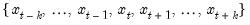
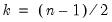
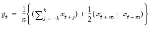
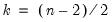
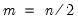

@mavc Rolling (Moving) Statistics Centered moving averages (ignore NAs). n-period centered moving averages, ignoring NAs. Syntax: @mavc(x, n) x: series n integer, series Return: series For each observation and integer , • If is odd, compute the average of the current, and previous and subsequent observations of a series,  where . If missing values are encountered, the observation is discarded, and the divisor for the mean is adjusted to compensate. • If is even, compute the period centered moving sum, weighting the endpoints by 1/2, then divide by :  where  and . If missing values are encountered, the observation is discarded, and the divisor for the mean is adjusted to compensate. If n is not an integer, the integer floor will be used. Examples show @mavc(x, 12) produces a linked series of the centered moving average of the series x where NAs are ignored. Cross-references See also @mav for a trailing moving average. For the NA-propagating variant of this function, see @movavc.


 and integer
and integer  ,
, is odd, compute the average of the current, and
is odd, compute the average of the current, and  previous and subsequent observations of a series,
previous and subsequent observations of a series, is even, compute the
is even, compute the  period centered moving sum, weighting the endpoints by 1/2, then divide by
period centered moving sum, weighting the endpoints by 1/2, then divide by  :
: will be used.
will be used.